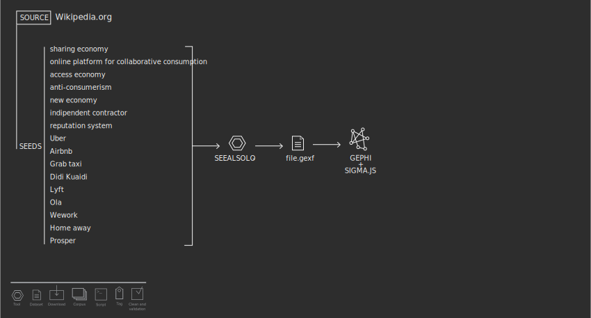

Protocol
The protocol adopted consists in using two main tools to analyze Wikipedia links network: Seealsology and Gephi. The first one is a Digital Methods Initiative tool that allows to export a structured dataset file directly readable by the other software. Our research on Seealsology was based on the following Wikipedia pages: Sharing economy, Online platform for collaborative consumption, Access economy, Anti-consumerism, New economy, Inependent contractor, Civic technology, Reputation system, Uber, Airbnb, GrabTaxi, Didi Kuaidi, Lyft, Ola, WeWork, HomeAway and Prosper. Thanks to it we were able to get all the “see also” articles of these pages, setting the scanning depth of research to 2.
From Seealsology we exported a .gexf Graph File and modifyed it with Gephi 0.8.2: all nodes have the same size, except for the ones used as queries; colors (always with exception for queries) were given by modularity clusterization; nodes position was given by Forceatlas 2. Finally tagged each color group as topic.
